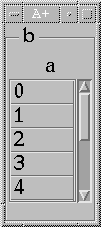
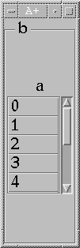
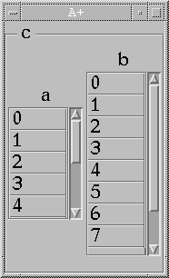

|  |
aûÉ10
bû`a
show `b is `layout
The natural size of the array-class object a is determined by (among other things)
the default number of rows displayed, which in this case is:
`rows of `a < 5 |
 |
Now grab the frame of the window with the mouse and pull down until eight rows of a
are exposed.
`rows of `a < 8This should look pretty much the same as executing the code `a has (`rows;8)Intuitively, however, they seem to be quite different. In the first case, the size of a is a function of the size of its parent b, while in the second case, the size of b is a function of the size of its child a. |
Since the second case will only arise when the program explicitly sets an attribute, there is no real need to constrain or control that kind of resizing. But in the first case, you might want to keep a from being resized no matter what the user does to change the size of b. In this example, you will want to set the "don't grow in height" constraint on a:
|  |
`a has (`resize;'H')As the window b is resized, a will hang on to its five-row display, centering itself in b-space.
What is actually going on, and what will help in understanding some of the examples to come,
is this: suppose you stretch b to include 100 additional height pixels. The layout
receives the message |
Consider the case:
|  |
aûbûÉ10
cû<`a`b
`a has (`resize;'H')
show `c is `layout
In this example, only a is constrained. Resizing the layout c has the
effect of giving extra space to the sole row of c, which in turn has the effect of
giving extra space to each child in that row. Array a rejects the space while
b accepts it. |
In an example involving more than one row:
 |
aûbûcûÉ10
dû(`a;`b;`c)
show `d is `layout
Resizing d 300 pixels larger will cause d to send three messages, one to
each of its rows:"grow by Ä300ß3 additional pixels" which in turn causes each row to send to its child the message to grow by that amount. In this case, all three children will expand. But if we were to set the H-constraint on b: `b has (`resize;'H')then we would see that a and c each take their share of the extra space, but b does not, as shown. |
The "H" attribute is paired with one for constraining width, called, appropriately enough, "W".